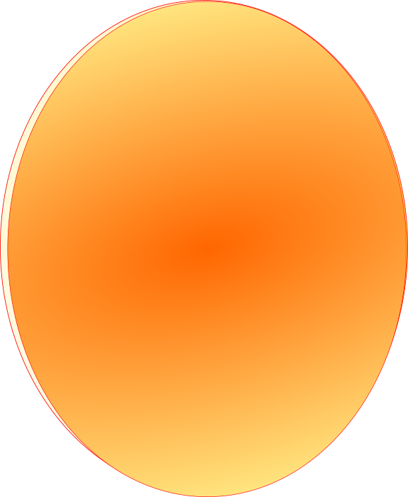

?
Czy wiedział_ś, że kiedy Słońce spali cały swój wodór,
będzie nadal spalać hel przez 130 milionów lat? W tym czasie rozszerzy się do tego
stopnia, że pochłonie Merkury, Wenus i Ziemię. Na tym etapie stanie się czerwonym
olbrzymem.

?
Czy wiedział_ś, że Merkury ciągnie za sobą długi ogon? Jest on w
pomarańczowo-żółtym kolorze. Planeta zawdzięcza ten nietypowy dodatek bliskości
Słońca i własnemu słabemu polu magnetycznemu, którego natężenie wynosi tylko jedną
setną ziemskiego.
?
Czy wiedział_ś, że atmosfera Wenus przypominała kiedyś
atmosferę ziemską a na powierzchni planety występowała woda? Odparowanie tych wód
spowodowało drastycznie narastający efekt cieplarniany, który utrzymuje się do
dzisiaj.
?
Czy wiedział_ś, że gdyby nie obecność naszego naturalnego satelity-
Księżyca dzień na Ziemi trwałby tylko 6 godzin? Podczas Zimnej Wojny rząd Stanów
Zjednoczonych planował na księżyc zrzucić bombę, która miała go zniszczyć. Miało to
służyć ukazaniu wielkości przewagi militarnej nad Rosją.
?
Czy wiedział_ś, że gdy jeszcze marsjańska atmosfera była
gęstsza, na powierzchni planety istniała woda w stanie ciekłym. Dzięki obserwacjom z
orbity udało się zlokalizować pozostałości koryt rzek oraz zbiorników wodnych.
?
Czy wiedział_ś, że liczba księżyców Jowisza to 92? Odkrycie wysunęło
zatem Jowisza na pierwsze miejsce wśród planet z największą ilością księżyców w Układzie
Słonecznym. Zdetronizowany Saturn ma ich "tylko" 83.
?
Czy wiedział_ś, że planeta obraca się tak szybko wokół własnej osi,
że jej kształt uległ spłaszczeniu na biegunach? Różnica odległości pomiędzy środkiem
planety a biegunami, a środkiem planety a równikiem wynosi 6300 km.
?
Czy wiedział_ś, że podobnie jak Wenus, Uran obraca się ze wschodu na
zachód? Ale Uran jest wyjątkowy w tym, że obraca się na boki.
?
Czy wiedział_ś, że podobnie jak Wenus, Uran obraca się ze wschodu na
zachód? Ale Uran jest wyjątkowy w tym, że obraca się na boki.